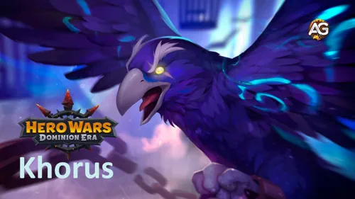
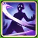
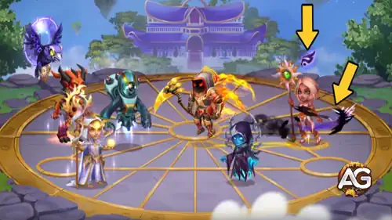
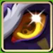
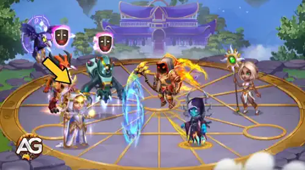
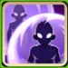
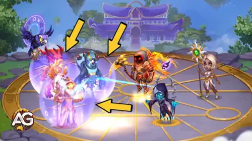
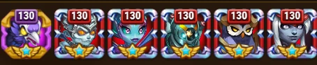

Guia do Mascote Khorus – Hero Wars: Dominion Era | Skills e Como Usar
- Por: Alexandre Domingos. .
Khorus é um poderoso mascote de suporte em Hero Wars: Dominion Era. Com alta penetração de armadura e um alto atributo de força, esse mascote luta na linha de trás e potencializa sua equipe com excelentes habilidades de suporte.
Este guia cobre tudo o que você precisa saber sobre Khorus, desde seu papel nas batalhas até seus atributos máximos e uso estratégico nas composições de equipe em Hero Wars.

Quem é Khorus?
Khorus é um mascote de suporte que se destaca ao combater efeitos de controle e ao fortalecer as defesas dos heróis. Posicionado na linha de trás, ele concede vantagens táticas aos aliados durante a batalha.
- Classe: Suporte
- Posição: Linha de trás
- Atributo principal: Força
Atributos máximos:
Força: 12.360
Penetração de Armadura: 47.911
Inteligência: 11.064
Dicas de Habilidades do Khorus - Hero Wars: Dominion Era
Aprenda a usar as habilidades de Khorus de forma eficaz na batalha para bloquear efeitos de controle, proteger seus aliados e enfrentar equipes focadas em dano mágico.
Habilidades Ativas do Khorus

Vingança do Bando
Essa habilidade funciona como um mecanismo de vingança. A cada 3 segundos, ou quando inimigos usam efeitos de controle como silêncio ou atordoamento, Khorus acumula energia mágica chamada Runas. Cada tipo de controle concede uma quantidade diferente de Runas. Quando ele acumula o suficiente, libera um ataque contra o inimigo que mais usou efeitos de controle — ou contra o de menor vida, em caso de empate. Quanto mais Runas acumuladas, maior o dano causado. É uma habilidade perfeita para enfrentar equipes com muito controle.

Dicas: Use Khorus contra equipes que dependem de controle (como Polaris ou Lian). Quanto mais efeitos de controle sua equipe sofrer, mais rápido Khorus causará dano.

O Indomável
Esta é uma habilidade passiva que ajuda automaticamente sua equipe a evitar efeitos de controle. Por exemplo, se um inimigo tentar silenciar ou atordoar um herói seu, há uma chance do efeito ser bloqueado. Cada vez que um bloqueio acontece, Khorus ganha Runas para sua outra habilidade, Vingança do Bando. É uma habilidade defensiva que constrói ofensiva ao longo do tempo.

Nota: Observe na imagem acima — quando Keira usou sua habilidade, ela deveria silenciar todos os inimigos, mas Helios foi protegido pela habilidade "O Indomável" de Khorus.
Dicas: Esta habilidade está sempre ativa. Combine Khorus com magos frágeis ou heróis suscetíveis a controle para protegê-los e acelerar a ativação da Vingança do Bando.
Habilidade de Patronagem do Khorus

Aura de Resiliência
Quando Khorus é atribuído como patrono de um herói, ele concede a esse herói e aos aliados próximos baseados em Inteligência um escudo mágico. Esse escudo transforma parte do dano mágico que eles causam em proteção contra ataques físicos. Quanto mais dano eles causarem e menor for sua vida, mais forte será o escudo. É excelente para proteger magos frágeis que ficam no meio da equipe.

Dicas: Atribua Khorus como patrono de magos como Lars, Orion ou Celeste para ajudá-los a sobreviver mais tempo na batalha. Funciona melhor em equipes com vários heróis de Inteligência.
Prós e Contras do Khorus - Hero Wars: Web e Facebook
✅ Prós
- Excelente contra equipes inimigas com muito controle, graças à sua habilidade de bloquear efeitos de controle.
- Oferece forte proteção para equipes baseadas em magia com seu escudo da Aura de Resiliência.
- Carrega Runas de forma passiva e ativa, permitindo causar dano constante a controladores inimigos importantes.
- Sua habilidade passiva ajuda aliados a resistirem a controle em grupo e transforma isso em dano.
- Dá suporte a heróis baseados em Inteligência, sendo ideal para composições de equipe com magos.
❌ Contras
- O dano das Runas só é eficaz se os inimigos aplicarem efeitos de controle — tem impacto limitado contra equipes focadas apenas em dano.
- A Aura de Resiliência só funciona com dano mágico, o que o torna menos útil em equipes físicas.
- O alvo do Círculo Rúnico depende das ações de controle dos inimigos e do inimigo com menos vida, o que pode parecer inconsistente.
- Não possui habilidades de cura ou geração de energia, focando apenas em contra-controle e escudos.
Sinergia do Khorus - Hero Wars: Dominion Era
Atualmente, Khorus é um dos mascotes mais populares entre as equipes do meta, tanto físicas quanto mágicas. Sua capacidade de neutralizar efeitos de controle o torna uma peça-chave na formação de equipes competitivas. Khorus é especialmente eficaz quando combinado com heróis como Augustus, Orion e Nebula.

Lista de Patronagem do Khorus - Hero Wars
Khorus oferece forte defesa mágica e mais sobrevivência para magos. Sua patronagem concede escudos que absorvem dano físico com base na vida perdida e no dano mágico causado.
Aidan

Augustus

Byrna

Celeste

Dilúvio (Cascade)

Fofinho (Fluffy)

Faceless

Folio

Guus

Helios

Judge

Kai

Krista

Lars

Lian

Lilith

Mojo


Peppy

Phobos

Polaris

Satori

Conclusão sobre o Khorus - Hero Wars: Dominion Era
Khorus é um mascote extremamente valioso para equipes que enfrentam dificuldades contra oponentes com muitos efeitos de controle. Sua habilidade de bloquear passivamente efeitos negativos como silêncio, charme, atordoamento e cegueira aumenta significativamente a sobrevivência dos seus heróis. Ao mesmo tempo, seu Círculo Rúnico adiciona dano constante ao longo do tempo, mirando nos inimigos que causam mais perturbação.
Além de sua utilidade ativa em batalha, Khorus se destaca como patrono de heróis baseados em Inteligência. Sua Aura de Resiliência transforma dano mágico em escudos protetores, oferecendo uma camada extra de defesa para magos como Orion, Krista e Celeste. Isso o torna uma ótima escolha para estratégias de médio a longo prazo focadas em dano mágico e resistência.
Seja colocado em batalha ou usado como patrono, Khorus oferece vantagens ofensivas e defensivas. Embora ele possa não se destacar em lutas rápidas ou contra equipes com pouco controle, seu valor se torna inegável em confrontos prolongados e contra composições com muito controle. Se você está montando uma equipe que depende de conjuradores ou precisa de proteção contra controle em grupo, Khorus é um dos melhores mascotes para investir.
Explore novas habilidades com nossos heróis em destaque!
 Guia do Mascote Biscuit para Hero Wars: Dominion Era
Guia do Mascote Biscuit para Hero Wars: Dominion Era
 Lista de Mascotes Definitiva para Hero Wars: Dominion Era
Lista de Mascotes Definitiva para Hero Wars: Dominion Era
 em Hero Wars: Dominion Era") Melhor Guia de Totens (Como Obter Totens) em Hero Wars: Dominion Era
Melhor Guia de Totens (Como Obter Totens) em Hero Wars: Dominion Era
Deixe Sua Opinião!
Você gostou do nosso Guia do PET Khorus para Hero Wars Web e Facebook? Há algo que não entendeu ou gostaria de sugerir mudanças? Convidamos você a se juntar à nossa sessão de comentários na página do Alexandre Games Blog. Não hesite em expressar sua opinião, clarificar suas dúvidas e compartilhar sua sugestões.
Clique no botão abaixo para começar: